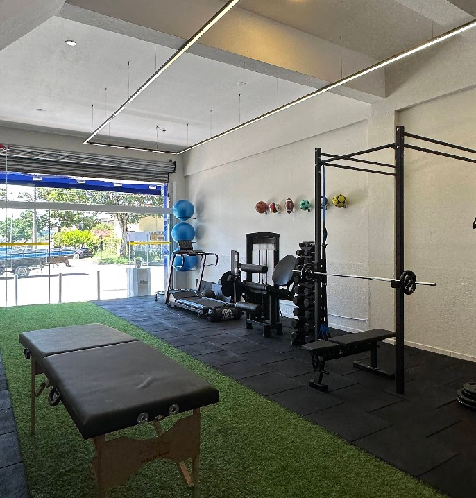
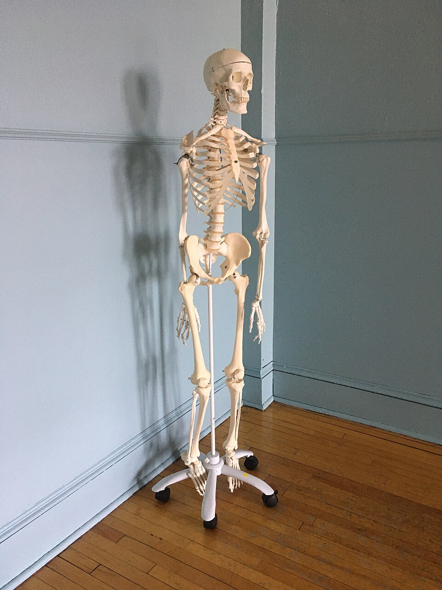
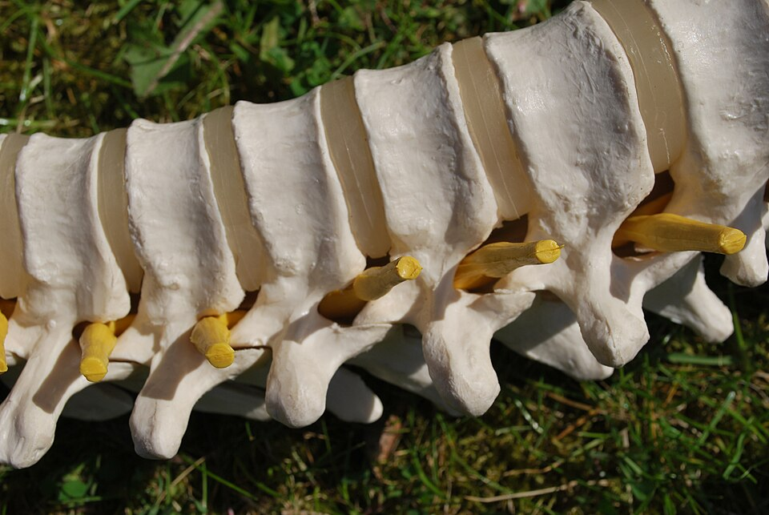
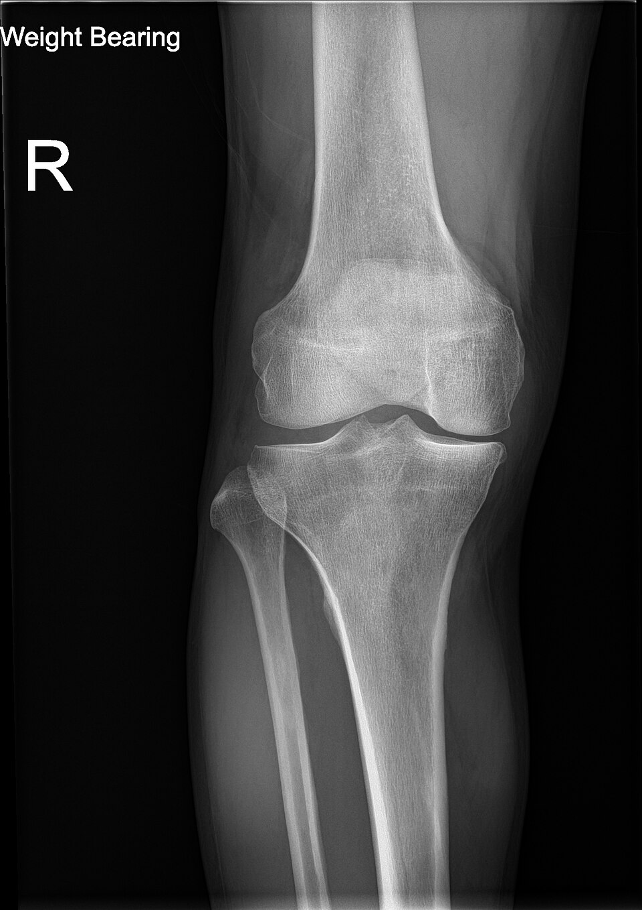
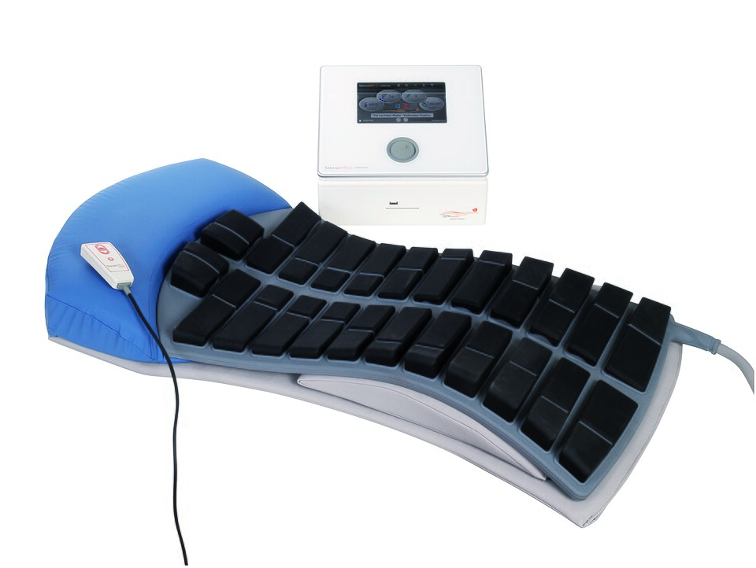
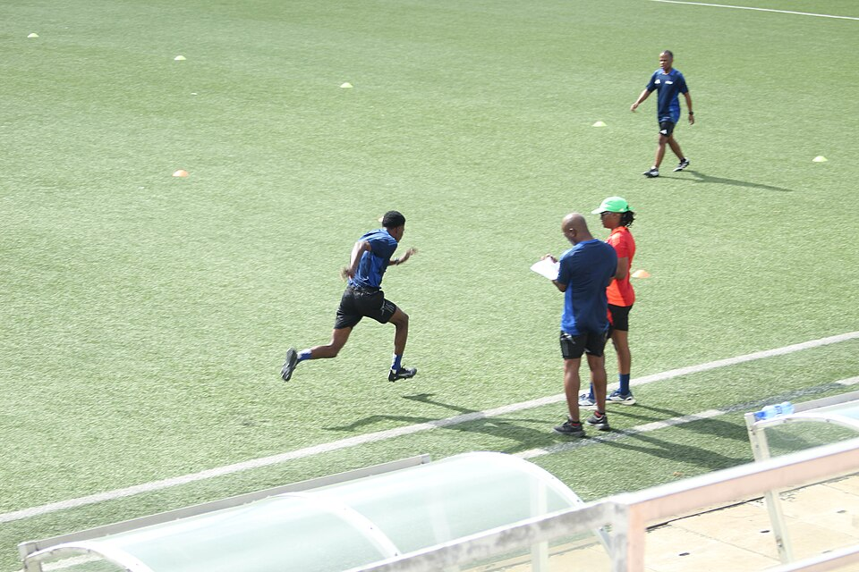

Fisioterapia esportiva em São José dos Campos
Ortopedia, performance e recovery no Jardim Satélite, para quem treina: corrida, futevôlei, musculação e qualquer treino que a dor anda atrapalhando.
- Endereço
- Av. Cassiopéia, 263
- Horário
- Seg a sex, 7h às 20h
- Nota 5,0 em 38 avaliações

Sobre a BASE Fisioterapia
Na BASE, ajudamos você a se movimentar melhor, cuidar da saúde e evoluir no esporte e no dia a dia. Somos um studio de Fisioterapia, Saúde e Performance em São José dos Campos.
Oferecemos fisioterapia individualizada, reabilitação, prevenção de lesões, recovery e treinamento funcional voltado à força, ao condicionamento e à performance. Ouvimos sua história e entendemos seus objetivos para oferecer um cuidado próximo e adequado às suas necessidades.
Seja para se recuperar, retomar suas atividades ou buscar novos desafios, entre em contato e conheça a BASE!
- HorárioSeg a sex 7h–20h
Sáb 7h–14h - EstacionamentoGratuito, em frente
- AgendamentoWhatsApp
(12) 99245-4994

Ortopedia, performance e recovery
A sessão acontece entre a maca e os aparelhos: a gente trata a dor e treina o movimento no mesmo lugar.
- Ortopedia
Dor no joelho, ombro, coluna e tornozelo, com diagnóstico e plano claro.
- Performance
Força, mobilidade e controle para treinar mais pesado sem se machucar.
- Recovery
Terapia manual e compressão para recuperar entre treinos e provas.
- Pós-operatório
Da primeira semana após a cirurgia até a volta ao esporte.


As 3 etapas da fisioterapia na BASE
Cada etapa tem um objetivo medido. Você sabe onde está e o que falta para voltar ao treino.
-
ETAPA 01

Avaliação completa
A gente investiga a causa da dor, e não só o lugar onde ela aparece.
- Histórico de treino, lesões e exames
- Testes de força, mobilidade e estabilidade
- Análise do gesto do seu esporte
-
ETAPA 02

Tratamento e recovery
Recursos para controlar a dor e exercícios com carga progressiva, encaixados na sua rotina.
- Terapia manual e recursos de analgesia
- Fortalecimento com carga progressiva
- Recovery entre treinos e provas
-
ETAPA 03

De volta ao esporte
A alta vem por critério, quando o corpo aguenta a carga que o seu treino pede.
- Testes de retorno ao esporte
- Plano de treino para manter o resultado
- Prevenção de uma nova lesão
Avaliações dos pacientes no Google
O que dizem as pessoas que já trataram ou treinaram na BASE.
“Centro de reabilitação e prevenção, inaugurado recentemente, com espaço muito bem equipado com tecnologia de ponta e profissionais como o João e o Gabriel que estão extremamente educados e inteligentes…”
“Recomendo! Ótimos profissionais, atenciosos, personalizado e completo! Lugar super acolhedor! Limpo e com equipamentos novos!”
“Excelentes em capacidade técnica e avaliativa. Sabem conduzir os atendimentos. Lugar lindo, organizado e de fácil localização. Possuem estacionamento em frente do estabelecimento gratuito próprio!”
A clínica na Avenida Cassiopéia
Estacionamento gratuito em frente. Atendimento com horário marcado pelo WhatsApp.
BASE Fisioterapia
Av. Cassiopeia, 263, Jardim SatéliteSão José dos Campos, SP, 12230-011
- Segunda a sexta
- 07:00–20:00
- Sábado
- 07:00–14:00
- Domingo
- Fechado